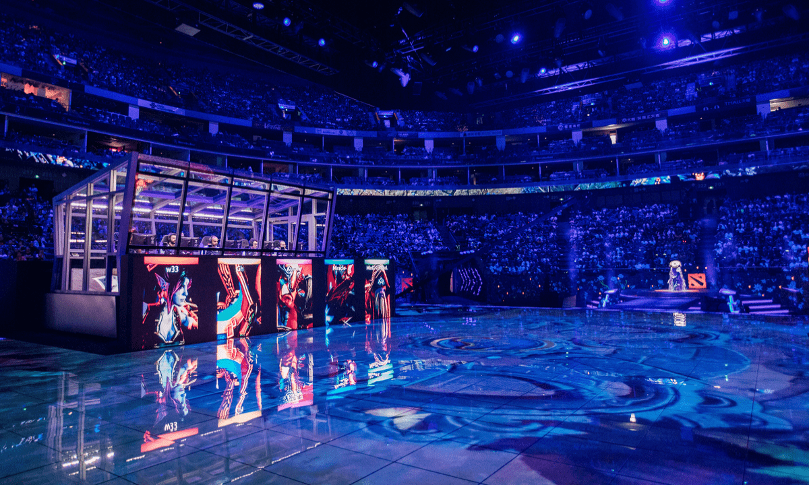

Esport se najlakše može opisati kao natjecateljsko igranje video igara, a esport igre se mogu igrati na računalima (PC), konzolama (PlayStation, Xbox, Nintendo Switch itd.), a u posljednje vrijeme sve se više igra i na mobilnim telefonima. Esport igre obično su dizajnirane upravo kako bi omogućile što kvalitetnije i bolje natjecanje stoga se često radi razlika između igara koje “jesu esport” i onih koje nisu.
Da bismo esport prihvatili kao “pravi” sport, trebali bismo izaći iz okvira “pravog” sporta, a to još uvijek nismo uspjeli. Kako danas stvari stoje, održavaju se pomaci u percepciji esporta i možda nekada dođe i do Olimpijade – ali danas je esport, barem službeno, vid natjecanja, a ne punopravni sport.
Prema tome, za mene je esport video igra sa što manje RNG-a (nasumičnih događaja), a esportaš se ne postaje igranjem Fife protiv prijatelja kod kuće.
The International turnir u online video igri Dota 2 već je godinama najveći turnir na svijetu po nagradnom fondu. Glavna nagrada The Internationala ove je godine prešla brojku od 30 milijuna dolara.
Kada je riječ o najgledanijim esport događajima, redovito su najgledaniji veliki League of Legends turniri (svjetsko prvenstvo i polusezonski (Mid-Season Invitational), zatim turnir IEM Katowice, The International, Fortnite World Cup i drugi. Ovi veliki turniri najčešće imaju nagradne fondove veće od milijun dolara, a nerijetko se radi o mnogo većim iznosima.
